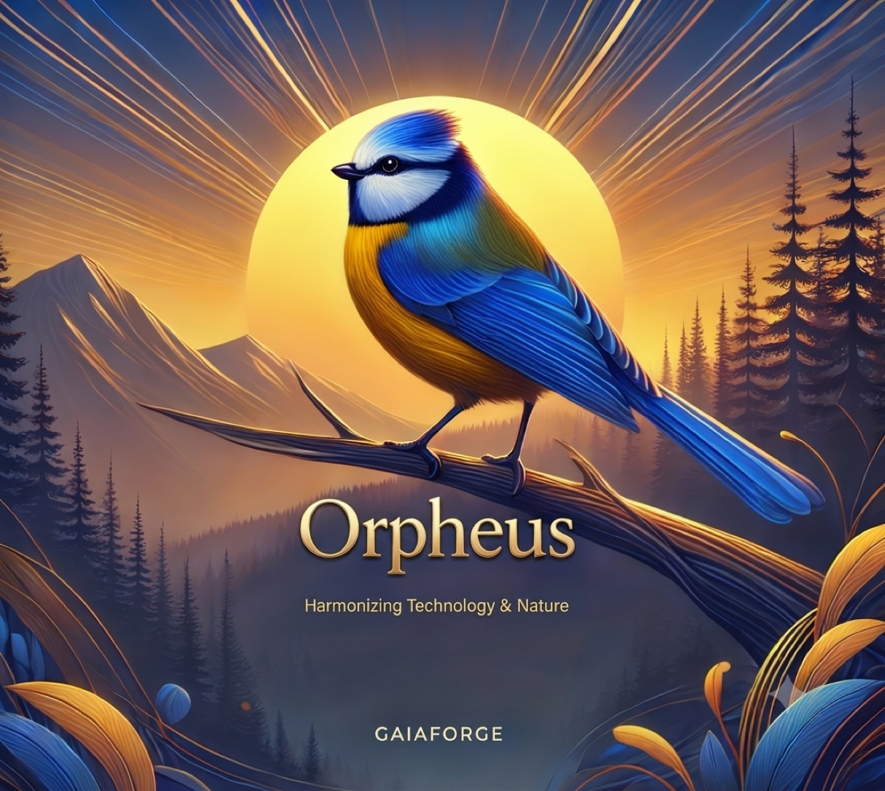

Autonomous Bioacoustic Playback System
Solar-Powered Audio Lure. Autonomous. Built for Wildlife Research.
Orpheus is a sophisticated bioacoustic playback system designed for ecosystem management, habitat restoration, and wildlife research. Deployed as an autonomous acoustic audio lure at bird ringing stations, ecoacoustic monitoring sites, and conservation reserves worldwide, Orpheus gives researchers precise control over sound playback based on astronomical events, time schedules, and seasonal patterns — all while running on solar power for months without intervention. Available in Basic and Pro versions.
Not sure which approach fits your study design? Read our guide to bioacoustic field equipment — passive monitoring vs active playback, and where Orpheus fits.
Each Orpheus unit is hand-built to order. Pricing and lead times vary based on your configuration and current order queue. Contact us to discuss your needs and get a quote.
Orpheus Basic and Pro both feature four powerful playback modes designed for research-grade precision:
Direct audio control with Play, Pause, and Stop functionality. Perfect for on-demand playback during field observations or controlled experiments.
Schedule audio at precise time windows throughout the day. Set specific intervals for targeted playback aligned with your research protocol.
Sun-synchronized scheduling that automatically adjusts to sunrise and sunset times. Ideal for studying crepuscular species and dawn/dusk behaviors.
Natural season-based scheduling (Spring, Summer, Fall, Winter) with support for custom date ranges. Perfect for migration studies and breeding seasons.
Both versions share core playback capabilities. Orpheus Basic is available now and ready to order. The Pro adds advanced monitoring, recording, AI species identification, and automated reporting for comprehensive research deployments. Final pricing depends on your configuration and current build queue — get in touch for a quote specific to your order.
| Feature | Basic | Pro |
|---|---|---|
| Manual Playback Mode | ||
| Interval Playback Mode | ||
| Astral Playback Mode | ||
| Seasonal Playback Mode | ||
| Solar Power Management | ||
| Deep Sleep Scheduling | ||
| Remote App Control (Bluetooth) | ||
| GPS Location Awareness | ||
| Touchscreen Display | ||
| Real-Time Solar Monitoring Pro | ||
| Environmental Sensors (Temperature, Humidity, Pressure) Pro | ||
| Audio Recording (16/24/32-bit) Pro | ||
| Playback Logging & Analytics Pro | ||
| Power Flow Visualization Pro | ||
| AI Species Identification Pro | ||
| Automated Research Reports (PDF) Pro | ||
| Multi-Device Management Pro |
Download user guides, technical specifications, and quick start guides for your Orpheus device.
Control and monitor your Orpheus device remotely via Bluetooth. Configure playback modes, adjust settings, sync time, and view real-time status from your phone.
Download APK for Android devices
Available on the App Store soon
Deploy species-specific bioacoustic playback and audio lures for monitoring and conservation studies with sun-synchronized scheduling
Create auditory landscapes to attract desired species to recovering ecosystems
Autonomous acoustic bird lures for capture and population research — schedule playback around dawn and dusk when target species are most active
Seasonal playback aligned with migration patterns for long-term deployments
Deploy sounds and record responses for ecosystem health assessment (Pro)
Every Orpheus is hand-built to order. Deploy an autonomous acoustic playback system that runs for months on solar power. Reduce manual work at your audio lure stations, enhance data accuracy, and let nature take its course.
Pricing and lead times depend on your configuration and where you fall in the build queue. Get in touch and we'll work out the details together.